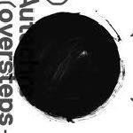

Music Reviews
-

The Tallest Man on Earth The Wild Hunt
The Swedish singer-songwriter doesn't want to be remembered when he's gone, but his intricate sophomore effort is downright unforgettable.
Juan Edgardo Rodríguez incessantly hums to the acoustic melody... -

Usher Raymond v. Raymond
Top R&B vocalist returns with sixth album, featuring more dance grooves and bedroom escapades.
Genice Phillips reviews... -

Jónsi Go
The Sigur Rós frontman releases an album more bombastic and massive than anything he's made before.
Andrew Baer thinks this is absurdly happy music... -
Tanlines Settings EP
Two white Brooklynites playing conga-esque electronic dance music. How could you possibly go wrong?
Luke Winkie rethinks the bongo's musical merit... -

Autechre Oversteps
Autechre's latest is still challenging, but those willing to stick it out will be rewarded with their best album for years.
Paul Fowler tries to nod his head in time... -
Meth-Ghost-Rae Wu Massacre
Ghostface, Method Man and Raekwon rhyming things with Bill Belichick and Cap'n Crunch Cereal over soul samples. Anything else you need to know?
Luke Winkie knows more about mid-90s Hip-Hop than you'd probably think... -

Black Tambourine Black Tambourine (Reissue)
Independent label Slumberland re-reissues the noise pop foursome's Complete Recordings with bonus material. The songs remain the same, but the influence keeps spreading.
Juan Edgardo Rodriguez take a trip back to 1989... -

Love is All Two Thousand and Ten Injuries
Three albums in, Love is All still sound head and shoulders better than the rest of the fuzzy blog set.
Nate Adams likes albums about numbers and feelings... -
Calixia Who Boyhood
Trust me, you won't want to know who Calixia is.
Chris Coplan reviews... -
Dum Dum Girls I Will Be
Revisiting the 60s girl group and examining the teenage heart, Dum Dum Girls’ debut is the sweetest album to come out in a long time. And, I mean that in a good way.
Sean Caldwell reviews...